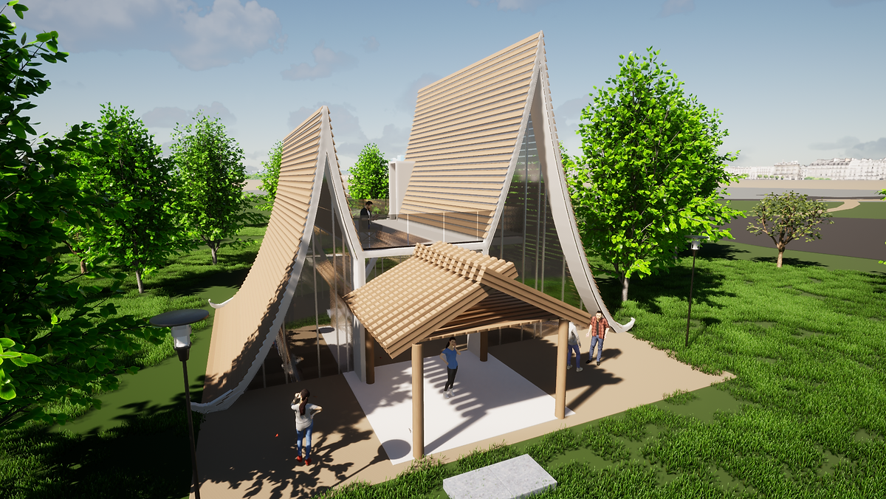
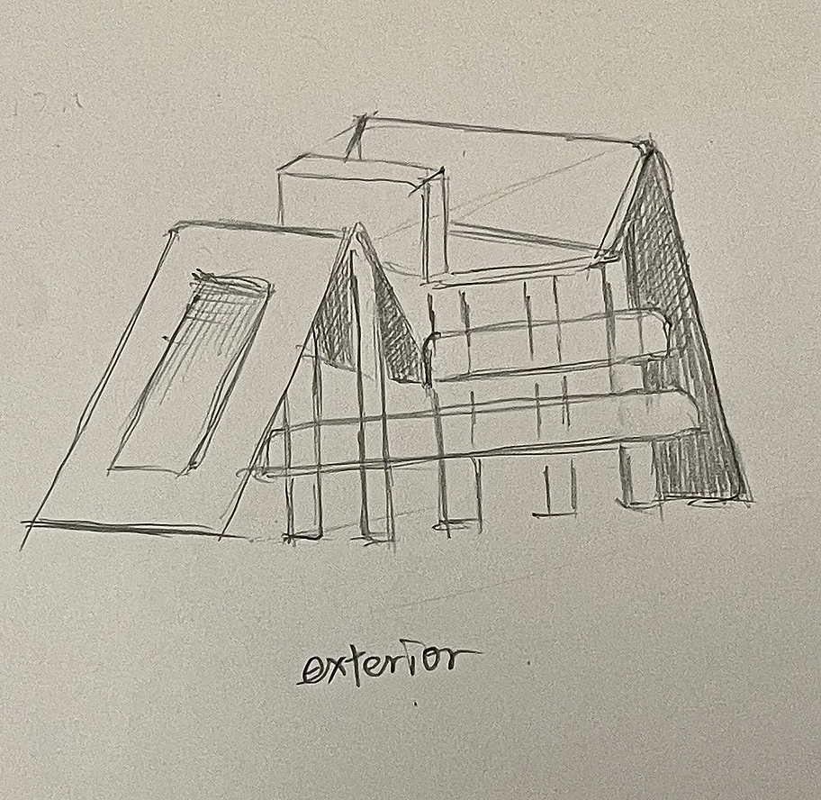
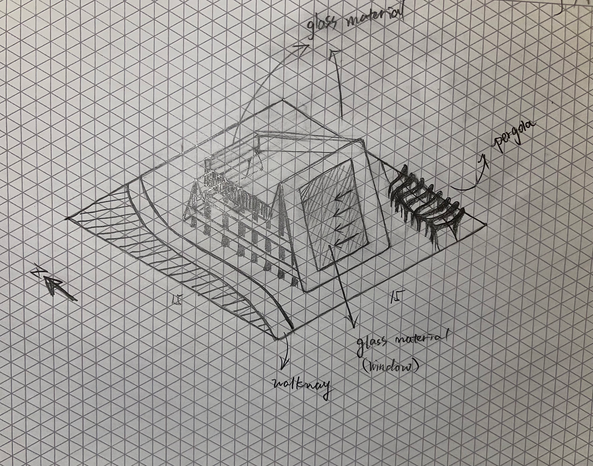
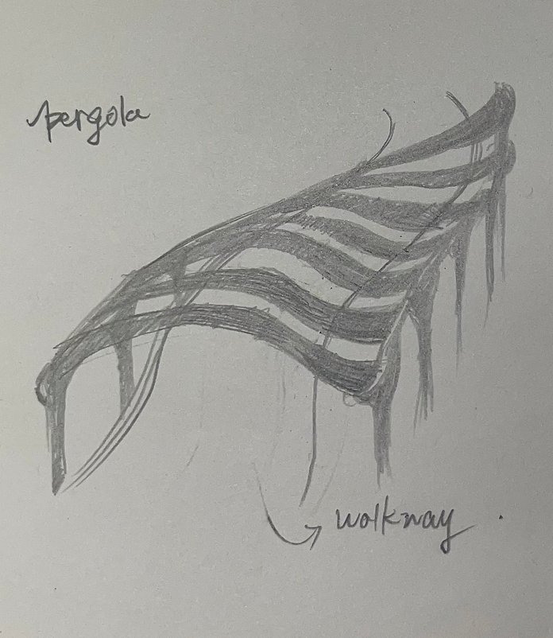
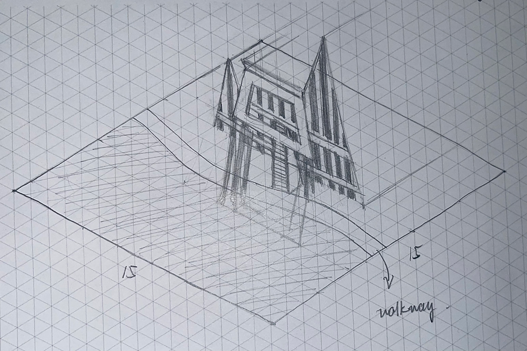
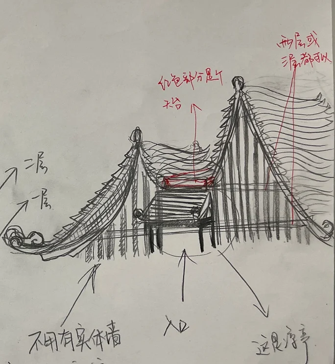

Ceremonial Pavilion

Based on the elements in Holland Park, we decided to incorporate Chinese elements in the design because it has significant connection with minimalistic, formal, and nature elements.
Our ceremony pavilion is a stunning display of modern architectural design, inspired by new Chinese architecture. We believe that the venue for the ceremony should have a certain sense of formality, which is why we designed the building to incorporate a lot of triangular elements. The triangular shapes add a unique touch to the pavilion, giving it an elegant and sophisticated look that will leave a lasting impression on all who attend. From the sleek lines of the roof to the intricate details in the stonework, every aspect of the pavilion was carefully crafted to create a sense of grandeur and beauty.

Ideation Sketch
Initially, our team's objective was to conceptualize and create a venue that would enhance the musical experience of the recital. We were determined to design a space that would forge a connection between music and nature, with the aim of creating a truly unforgettable experience for our audience. Through careful planning and meticulous attention to detail, we hoped to immerse our guests in a sensory oasis, surrounded by elements of the natural world, and enveloped by the sweet melodies and harmonies of our performers.

Ideation Sketch
The use of lines as our design element supports the goal for this venue. By implementing minimalistic design, we allow people to focus on the music and nature connection. The use of clean lines and simple shapes creates a sense of calm and uncluttered space, where the guests can fully immerse themselves in the experience. This intentional design choice helps to enhance the overall atmosphere and allows for a more meaningful connection between the audience, the music, and the natural surroundings.

Ideation Sketch
The elegant curviness of the pergola gracefully hinted to people passing by that it was more than just a structure, but rather a place where music recitals could take place. The gentle curves of the pergola also beautifully demonstrated the diversity of lines with their sweeping arches and intricate details.

Modification Sketch
After much consideration of the surrounding environment, we have made a complete shift in our design purpose. Originally intended as a space for music recitals, our building plans have been reimagined into a grand ceremonial building that is more in harmony with our natural surroundings. The new design will allow us to better showcase the beauty of the surrounding landscape and provide an ideal location for ceremonies and events.

Modification Sketch
By incorporating elements of Chinese ancient architecture into the design of the pavilion and pergola, we have elevated the level of solemnity and grandeur in the overall structure. However, we have also begun to consider whether this added seriousness may be too overwhelming for the intended purpose. Despite this potential concern, the intricate details and ornate decorations inspired by traditional Chinese architecture have undeniably added a unique and impressive quality to the pavilion and pergola.

Rhino Final Model
As we evaluated the design of the pavilion, we recognized the need to balance the use of Chinese elements with modernity. Therefore, we made the decision to decrease the level of using Chinese elements and increase the modernity of the pavilion to appeal to a wider audience and make it more relevant in today's world. The updated design includes sleek lines, contemporary materials, and subtle nods to Chinese culture, resulting in a harmonious blend of tradition and innovation.In addition, by keeping the use of glass to cover half of the pavilion, it made the venue brighter and airy.